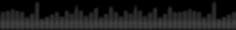
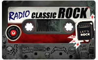

Gestiona tus tareas y escucha radio online
5CROver es un gestor de actividades con temporizador Pomodoro, reproductor de streams públicos y cintas de cassette curadas, todo integrado en un escritorio con estética retro de radio y TV.

TIMER
Cronómetro Pomodoro
Presets, alarma y bloqueoSelección de tiempo con presets de horas (1H · 2H · 3H · 4H) y minutos (5M · 10M · 15M · 30M), controles START / STOP con borde de acento y bloqueo de presets para evitar toques accidentales mientras corre el tiempo.
- Presets de hora y minuto con selección visual
- Selector directo de horas y minutos (START / STOP)
- Alarma sonora al terminar (canal separado)
- Selector de tiempo con horas y minutos (SET TIME)
Nodos de progreso
16 lámparas paso a pasoUna secuencia de 16 nodos se enciende de forma progresiva mientras avanza el tiempo, con picos de luz que recorren el panel (estilo "lighthouse").
- 16 nodos con intensidad, tamaño y color dinámicos
- Barra lateral de faro a la izquierda, con destellos de acento
- Sincronizado con el modo de tarea y tiempo restante
Pantalla con fondo de TV
Marcos y GIF animados de temaEl panel del temporizador luce un marco de TV (los temas viejos, acero, tarjeta o consola) y en su interior se proyecta el tiempo en fuente digital.
- Reloj digital con fuente "Digital Clock" y glow
- Marcos de TV animados según el tema de cassette o THEME
- Altura del panel adaptada al marco seleccionado
- Botones THEME / IMAGE / COLOR sobre el panel
CASSETTES

RADIO / PLAYLISTS (.m3u)
Cada cassette guarda su imagen, color de interfaz, GIF de pantalla, marco de TV y el listado de emisoras o canciones a reproducir. Al cambiar, la música y el color se aplican al instante mientras la carátula hace un fundido.
Colección de cassettes
CASS_master.txtUna librería de cassettes definidos en un archivo maestro. Cada uno puede cambiar el color de toda la interfaz al reproducirse.
- Transporte ⏮ ▶ ⏹ ⏭ y salto directo por NRO
- Lista rápida de cassettes (CASSETTE LIST)
- Cambio aplicado al instante con fundido de carátula
- Créditos por cassette: imagen + GIF + color + tema TV
Favoritos
Acceso rápidoGuardá tus cassettes preferidos y aplicá su color y marco de TV al instante con un solo toque.
- ADD FAV / FAV LIST para administrar
- Restaura color de interfaz, tema y título
Ecualizador animado
30 estilos de radioEl reproductor dibuja un ecualizador con título de emisora y una piel de radio con perillas, parlantes grillé y tornillos.
- 30 estilos: olas, corazón, radar, lluvia digital, serpiente…
- Perillas ABC de volumen (✺ MAX / ✸ MED / ✶ LOW)
- Transiciones con fundido entre cassettes
TOOLS
Color de la app
Paleta completaElegí un color base y toda la interfaz se recalcula a partir de él: fondo oscurecido, paneles y listas con contraste automático. Menú con blancos, negros, primarios, secundarios y tonos especiales (cyan, magenta, coral, teal, rosa, dorado).
THEME / IMAGE
Ciclos de tema y fondoCambiá el marco del aparato y el fondo del panel con fondos de TV animados (clásicos, acero, tarjeta, consola).
- THEME: recorre los fondos de TV definidos en THEME.txt
- IMAGE: cicla imágenes de pantalla / GIF con ruido
- Botones sobre el panel del TV, al costado del sprite
- Mantiene el color de acento elegido
Estilo de radio / skins
Draw customLa interfaz se pinta a mano: tornillos, remaches, placas de cabecera, perillas, jacks de colores y rejillas metálicas con relieve.
- Header plates con tornillos en las esquinas
- Slider de volumen (línea + pulgar) y presets LOW/MED/MAX
- 6 jacks de colores decorativos
- Contenido de las secciones a medida (SECTION BODY)
Tareas con tiempo
AddTask / EditTaskLas tareas tienen nombre, tiempo e ícono, se inician tocándolas y comparten la barra de nodos del temporizador.
- Íconos tipo tarjeta (libro, código, música, deporte…)
- Edición con clic derecho (EDITAR)
- Barra de progreso y tiempo restante
- Acceso rápido PDF / YT / LEARN en una fila
PLAYER
Reproducción HLS + WMP
LibVLC / Windows MediaMúltiples motores según el contenido: Windows Media Player para streams simples y un reproductor VLC (LibVLC) para listas HLS con descarga por segmentos y reproducción continua.
- Detección automática de .m3u8/.m3u (HLS)
- Fallback a HLS si WMP no arranca (10 s de espera)
- Metadatos de título y artista en vivo (SONG TITLE)
Volumen por perilla
Slider custom + ABCControl de volumen con línea y pulgar deslizantes, más tres perillas de presets: A máximo, B medio, C bajo.
- Drag con el mouse sobre la pista
- Presets LOW / MED / MAX y perillas ABC
- Actualizado también desde el reproductor de fondo
Metadatos en pantalla
SONG TITLELa línea inferior muestra el título del m3u y la canción actual, y también se usa para los mensajes del sistema de aprendizaje.
- Actualización de metadatos periódica
- Mensajes de éxito (racha, nivel, meta)
EXTRAS
LEARNING
Estudio gamificado: materias (Matemáticas, SQL, Programación, Inglés) con XP, niveles, rachas y meta diaria. Paneles de PROGRESO, BOOSTERS, PASSWORD y OPCIONES, más PERSONALIZAR con editor de personaje (tienda de potenciadores próximamente).
YOUTUBE VIEWER
Ventana integrada con WebView2 para abrir y navegar videos de YouTube desde la app, con barra de URL y botón GO (experimental).
PDF MANUAL
Visor de PDF (PdfiumViewer) para abrir el manual de usuario dentro de la aplicación, con marcadores y barra de herramientas (experimental).
SET TIME
Selector de tiempo con horas y minutos, y botones START/STOP para configurar el temporizador de forma rápida.
CASSETTE LIST
Vista rápida de todos los cassettes cargados desde CASS_master.txt para saltar directo al que quieras.
FAVORITES
Lista de accesos directos para volver a tu cassette favorito con su tema, color y música en un toque (FAV LIST).
ALARMA
Alarma sonora al terminar el temporizador, reproducida en un canal separado sin cortar la música.
INFORMACIÓN
Notas legales de CINCROSS: no es propietaria de las emisoras y cede todos los derechos de los contenidos a sus dueños.
TEMAS
Elegí un color y la página cambia de acento, tal como lo hace la app al aplicar el color base de cada cassette o tema: